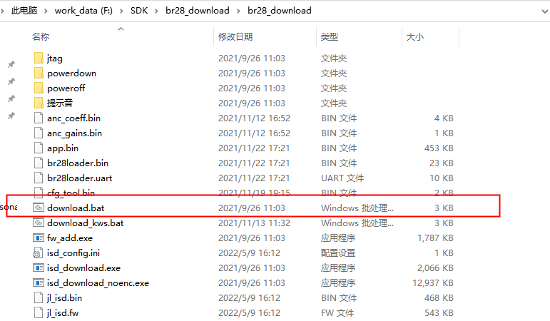
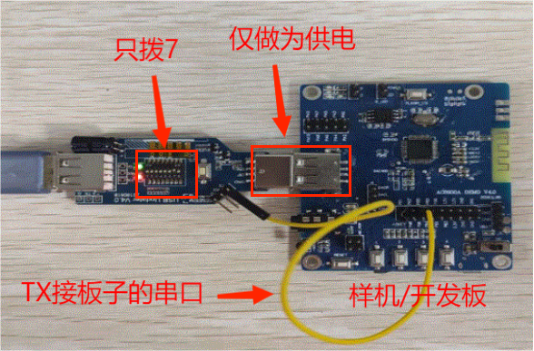

6.1. 升级与下载说明
6.1.1. 升级操作
大部分情况下，当需要下载程序到开发板、样机的时候，都是使用常规升级的方式。少部分的芯片使用串口升级的情况（如AD15）。
6.1.1.1. 常规升级
1、强制升级工具拨码
从下面表格的拨码形式来进入升级模式
拨码开关低四位 |
灯状态 |
按键 |
说明 |
|---|---|---|---|
不拨 |
红灯常亮，绿灯闪烁 |
需要按按键 |
因为按按键实际上是停止一次电源输出250ms以上，来让芯片复位，发一次握手信号。 |
拨1挡 |
红灯常亮，绿灯常亮 |
不需要按按键 |
因为工具会定期停止电源输出，让芯片复位，定期发握手信号。 |
拨2挡 |
红灯常亮，绿灯闪烁 |
需要按按键 |
因为按按键实际上是停止一次电源输出250ms以上，来让芯片复位，发一次握手信号。 |
拨3挡 |
红灯常亮，绿灯常亮 |
不需要按按键，要快插或者芯片唤醒 |
工具一直在发握手信号，快插的目的是让芯片上电复位，而芯片唤醒也是复位的一种形式，也可以握手成功。 |
Note
每次只能拨其中一位，并且需要重新将强制升级工具连接电脑
2、芯片与强制升级工具连接
强制升级工具的USB母头与电脑连接，USB公头连接样机或开发板。（注意不要接反，参考下图）

3、进行下载升级
第二步后，选择不拨或者拨2档需要按按键至绿灯灭，红灯常亮；拨1档或拨3档的至绿灯灭，红灯常亮就可以进入下载升级；（灯状态参考《灯的状态说明》
打开SDK里的下载目录运行download.bat即可升级下载。

芯片进入强制升级模式的原理：
首要条件，是让芯片复位，即芯片要从头跑启动代码开始。
其次，于芯片复位之际，工具给芯片发送握手信号，即usbkey，ispkey，uartkey等等。
最后，芯片握手成功后，就进入了强制升级模式，此时电脑的设备管理器会出现芯片型号的盘符。
例如，这里显示的是蓝牙系列的一款芯片BR28(蓝牙类一般是BR开头的，视频类一般是DV，通用一般是SH)：
通过拨动强制升级工具工具中的低四位来选择工具发送什么握手信号给芯片
通过《工具拨码开关说明》来查看低四位开关
6.1.1.2. 串口升级
强制升级工具4.0是支持芯片通过串口升级的
现以AC697x为例操作如下：

（1）工具要拨拨码开关第7挡，并且要与虚拟串口绑定。(参考《虚拟串口》)。
（2）工具的TX脚与芯片的串口升级引脚相连接，AC697x芯片之后的芯片的串口升级脚都是LDOIN脚，AC697x芯片之前的芯片的串口升级脚都是PB05脚，芯片由工具供电，并且共地。
Note
注意，第（3）步一般情况下，SDK已经设置好。无需在自行修改设置ini文件。
（3）打开下载目录，编辑目录里的isd_config.ini文件，修改名为DOWNLOAD_MODEL的配置项，修改为SERIAL（一般情况下SDK已经默认设置了，无需修改），并保存修改。


（4）双击下载目录的download.bat文件，即可进行串口升级。